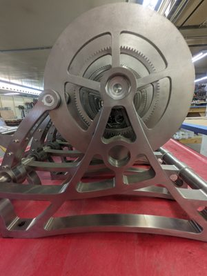
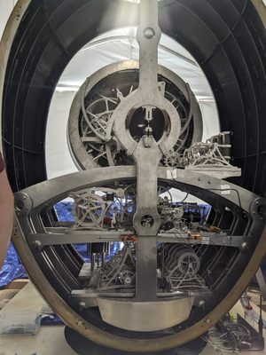
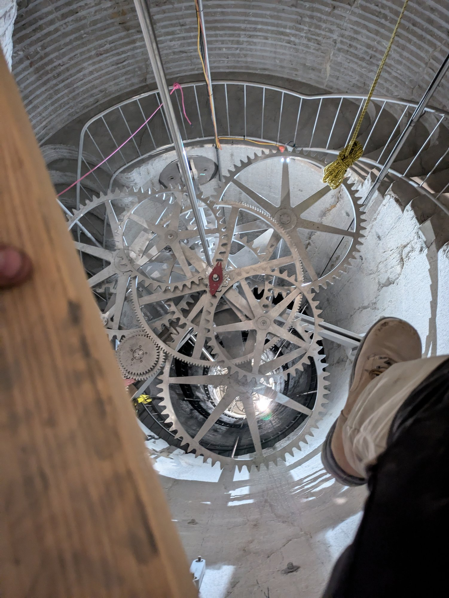

Mechanism Engineering
2019 – 2025
Autodesk Inventor
CNC Milling
Wire EDM
Illustrator
Engineer — Applied Invention
Machine
As an engineer at Applied Invention in Burbank, I was responsible for the integrated testing and assembly, installation, and early commissioning phases of the timekeeping and calendar mechanisms for the Clock of the Long Now — a 10,000-year mechanical clock being constructed inside a mountain in West Texas by the Long Now Foundation.
The work demanded extreme precision and scrupulous documentation. Over six years I engineered, fabricated, and tested hundreds of bespoke CNC parts — including comparator mechanisms used to verify timekeeping accuracy to fine tolerances. Materials ranged from stainless steel and titanium to silicon nitride ceramic, all chosen for millennial-scale durability.
Other work on the Mechanical R&D team included ARM microcontroller programming and sensor data collection for an experimental Smart Tire IMU insert, and production part design for an autonomous CNC greenhouse overbot.


